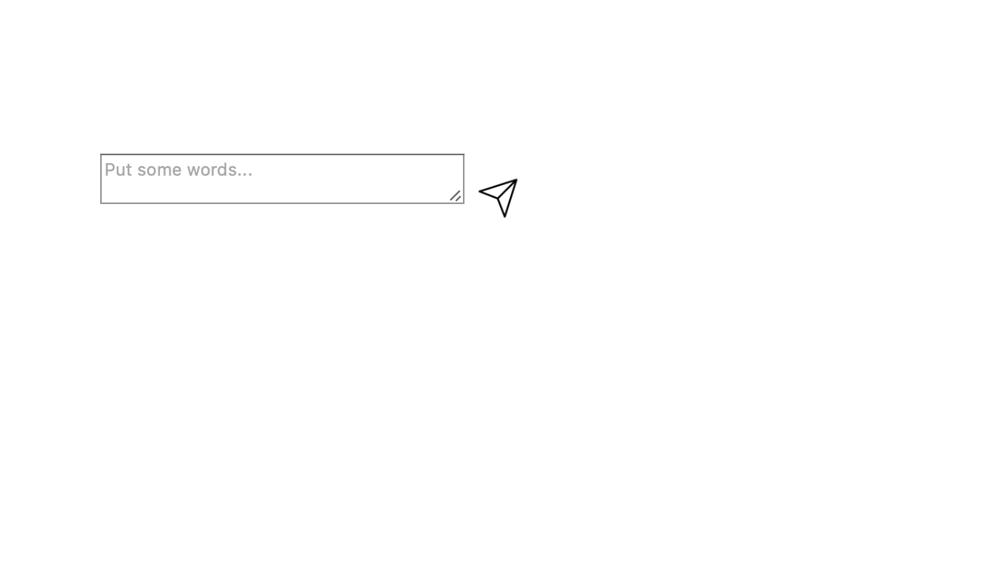
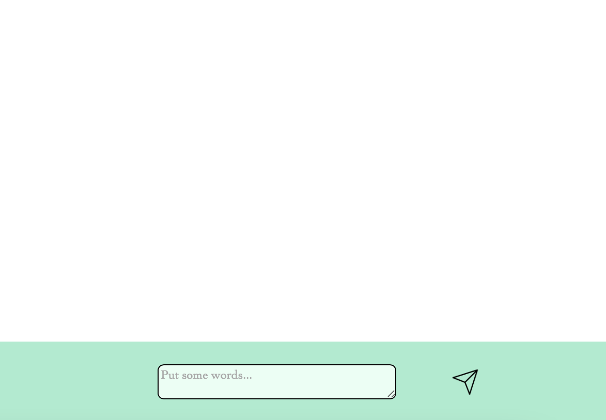

Hello!
・簡単にいうとデフォルトのボタンを非表示にして、その上からボタンを自分で作ります。
・まずMAMPを開いて、右上のスタートボタンを押します。

・先程のexam.phpを開いてください。
・新たにtest.cssを作成して開いてください。
・先程のボタンのHTMLを以下のように治してください。
<label id='button'>
<button class="button" type="button" name="send" value="Send" onclick="file_upload()"></button>
<img class='sicon'src="./setting_photo/send.png" alt="">
</label>
・ボタンにクラスを追加してください。
・新たにアイコンにしたい画像を、選んでパスを入れてください。
・画像のクラスをsiconにしてください。
・先程指定した、二つのクラスに対してcssを作成していきます。
.button
{
display: none;
}
.sicon
{
width: 30px;
}
・buttonクラスでまずデフォルトのボタンを非表示にします。
・siconでアイコンにしたい画像のサイズを入力します。
・これで以下の画像のようになったと思います。

・http://localhost/exam.phpをみて確認してください。
・今回はただの送信ボタンを、おしゃれにしました。
・さらに周りをデザインするだけでも、見やすくなります。

Fin.